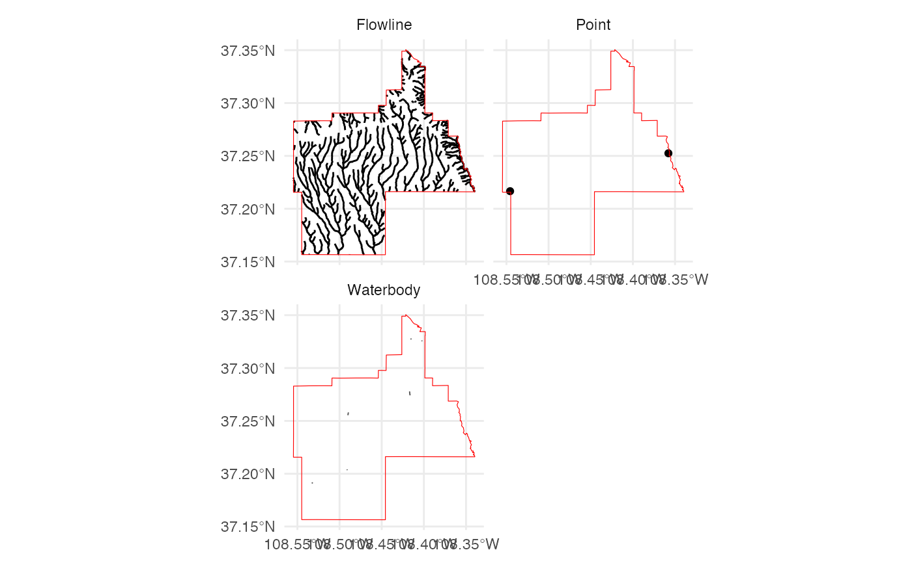

get_nhd returns a list of Simple Feature objects extracted
from the National Hydrography Dataset.
Arguments
- template
An
Simple FeatureorSpatRasterobject to serve as a template for cropping.- label
A character string naming the study area.
- nhdplus
Extract data from the USGS NHDPlus High Resolution service (experimental)
- extraction.dir
A character string indicating where the extracted and cropped NHD data should be put.
- force.redo
If an extraction for this template and label already exists, should a new one be created?
Examples
# \donttest{
# Get the NHD (USA ONLY)
NHD <- get_nhd(
template = FedData::meve,
label = "meve"
)
#> Registered S3 method overwritten by 'jsonify':
#> method from
#> print.json jsonlite
NHD
#> $Point
#> Simple feature collection with 2 features and 10 fields
#> Geometry type: POINT
#> Dimension: XY
#> Bounding box: xmin: -12083250 ymin: 4469345 xmax: -12062340 ymax: 4474361
#> Projected CRS: WGS 84 / Pseudo-Mercator
#> # A tibble: 2 × 11
#> OBJECTID FDATE RESOLUTION GNIS_ID GNIS_NAME REACHCODE FTYPE
#> <dbl> <dttm> <dbl> <chr> <chr> <chr> <dbl>
#> 1 16724 2003-07-01 18:00:00 2 00179195 Rock Springs NA 458
#> 2 481568 2015-03-06 03:56:39 2 NA NA NA 367
#> # ℹ 4 more variables: FCODE <dbl>, PERMANENT_IDENTIFIER <chr>, GLOBALID <chr>,
#> # geom <POINT [m]>
#>
#> $Flowline
#> Simple feature collection with 424 features and 17 fields
#> Geometry type: MULTILINESTRING
#> Dimension: XY
#> Bounding box: xmin: -12084260 ymin: 4460933 xmax: -12060340 ymax: 4487920
#> Projected CRS: WGS 84 / Pseudo-Mercator
#> # A tibble: 424 × 18
#> OBJECTID permanent_identifier fdate resolution gnis_id
#> <dbl> <chr> <dttm> <dbl> <chr>
#> 1 25888 89636109 2012-02-18 05:02:41 2 NA
#> 2 25988 89636095 2012-02-18 05:00:10 2 00902295
#> 3 143005 89639153 2015-09-07 18:00:00 2 00902295
#> 4 471453 89639251 2012-02-18 05:01:07 2 00902295
#> 5 472018 89636103 2012-02-18 05:00:10 2 00902295
#> 6 472099 89638687 2012-02-18 05:01:27 2 NA
#> 7 586689 89635471 2012-02-18 05:00:33 2 NA
#> 8 586796 89638705 2012-02-18 05:00:14 2 NA
#> 9 809460 89634465 2015-06-30 18:00:00 2 NA
#> 10 887363 82523370 2020-10-08 18:00:00 2 NA
#> # ℹ 414 more rows
#> # ℹ 13 more variables: gnis_name <chr>, lengthkm <dbl>, reachcode <chr>,
#> # flowdir <dbl>, wbarea_permanent_identifier <chr>, ftype <dbl>, fcode <dbl>,
#> # innetwork <dbl>, mainpath <dbl>, visibilityfilter <dbl>,
#> # Shape_Length <dbl>, globalid <chr>, geom <MULTILINESTRING [m]>
#>
#> $Waterbody
#> Simple feature collection with 10 features and 15 fields
#> Geometry type: POLYGON
#> Dimension: XY
#> Bounding box: xmin: -12081810 ymin: 4465756 xmax: -12067270 ymax: 4484894
#> Projected CRS: WGS 84 / Pseudo-Mercator
#> # A tibble: 10 × 16
#> OBJECTID PERMANENT_IDENTIFIER FDATE RESOLUTION GNIS_ID
#> <dbl> <chr> <dttm> <dbl> <chr>
#> 1 1326666 89638655 2003-07-01 18:00:00 2 NA
#> 2 2436074 89634565 2003-07-01 18:00:00 2 NA
#> 3 2532090 89638207 2003-07-01 18:00:00 2 NA
#> 4 2893566 89634585 2003-07-01 18:00:00 2 NA
#> 5 3640339 89634605 2003-07-01 18:00:00 2 NA
#> 6 4339039 89634591 2003-07-01 18:00:00 2 NA
#> 7 4459618 89634587 2003-07-01 18:00:00 2 NA
#> 8 4821810 89638209 2003-07-01 18:00:00 2 NA
#> 9 5304625 89634583 2003-07-01 18:00:00 2 NA
#> 10 5906925 89634589 2003-07-01 18:00:00 2 NA
#> # ℹ 11 more variables: GNIS_NAME <chr>, AREASQKM <dbl>, ELEVATION <dbl>,
#> # REACHCODE <chr>, FTYPE <dbl>, FCODE <dbl>, VISIBILITYFILTER <dbl>,
#> # SHAPE_Length <dbl>, SHAPE_Area <dbl>, GLOBALID <chr>, geom <POLYGON [m]>
#>
NHD %>%
plot_nhd(template = FedData::meve)

# }